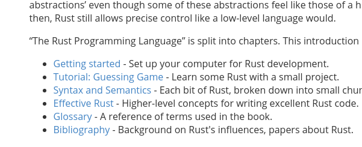
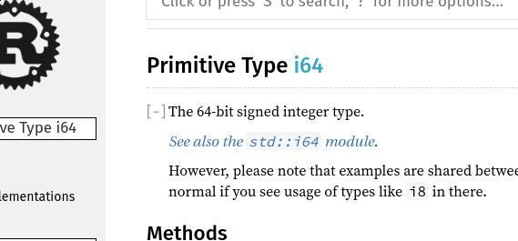
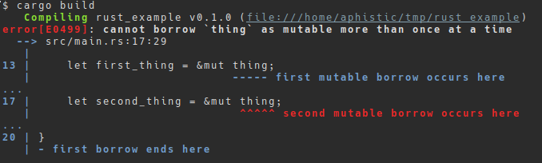
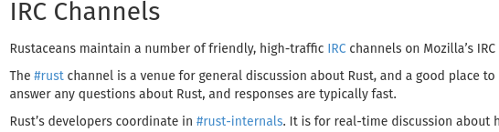
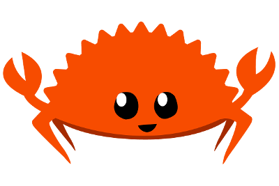

Erik Davidson
fn main() {
let greetings = ["Hello", "Hola", "Bonjour"];
for (num, greeting) in greetings.iter().enumerate() {
print!("{} : ", greeting);
match num {
0 => println!("I'm in English!"),
1 => println!("I'm in Spanish!"),
2 => println!("I'm in French!"),
_ => {},
}
}
}
Not Your Typical Enum
// Typical C Enum
typedef enum {
RED, // = 0
BLUE, // = 1
GREEN // = 2
} color;
color background = BLUE;
You Can Use Them The Same Way
// Basic Rust Enum
enum Color {
Red,
Blue,
Green,
}
let background: Color = Color::Blue;
But They Can Also Contain Other Data!
struct Ipv4Addr { /* IPv4 data */ }
struct Ipv6Addr { /* IPv6 data */ }
enum IpAddr {
V4(Ipv4Addr), // IpAddr::V4 with Ipv4Addr instance
V6(Ipv6Addr), // IpAddr::V6 with Ipv6Addr instance
}
// Bind IpAddr::V4 with an associated IPv4 (127.0.0.1) to ip4
let ip4 = IpAddr::V4(Ipv4Addr::new(127, 0, 0, 1));
let ip4_2 = IpAddr::V4(Ipv4Addr::new(10, 10, 10, 10));
// Bind IpAddr::V6 with an associated IPv6 (::1) to ip6
let ip6 = IpAddr::V6(Ipv6Addr::new(0, 0, 0, 0, 0, 0, 0, 1));
From Representing "null"...
let my_value = Option::Some(1);
let my_nothing = Option::None;
To Error Handling.
enum Result<O, E> {
Ok(O), // Ok contains the generic type O
Err(E), // Err contains the generic type E
}
// Inside a function:
if fail {
return Result::Err("this could be a struct too!");
}
return Result::Ok(42);
This...
if my_num == 1 {
println!("one");
} else if my_num == 2 {
println!("two");
} else {
println!("WAT?!");
}
Becomes This.
match my_num {
1 => println!("one"),
2 => println!("two"),
_ => println!("WAT?!"),
}
They Can Be Used For Assignments
let num_str = match my_num {
1 => "one",
2 => "two",
3 => "three",
4 | 5 => "four or five",
_ => "anything else",
};
They Help With Safety
let num_str = match my_num {
1 => "one",
2 => "two",
3 => "three",
// No handler for _, meaning "all others"
};
They Also Help With Error Handling
// IpAddr::from_str accepts a string and returns a
// Result<IpAddr, AddrParseError> enum value
match IpAddr::from_str("not an ip") {
Result::Ok(ip) => println!("Got an IP! It's {}", ip),
Result::Err(_) => println!("Not an IP :("),
}
Ranges Too! Does It Ever End?!
match my_num {
n @ 1 ... 3 | n @ 6 ... 8 => println!("{}, win!", n),
_ => println!("lose :("),
}
Nope! Guards As Well!
let x = 4;
let y = false;
let z: u8 = rand::random();
// Prints "no" even though x is 4 because y is false
match x {
3 if z > 5 => println!("maybe"),
4 | 5 if y => println!("yes"),
_ => println!("no"),
}
Everything's Immutable!
let my_num = 12;
my_num = 23;
A Variable Needs To "Opt-In" To Mutability
// Declare my_num as mutable with mut
let mut my_num = 23;
my_num = 42;
How Rust Guarantees Safety
Ownership
// v1 "owns" the Vec instance
let mut v1 = Vec::new(); // New Vec(tor)
v1.push(1);
// Ownership of v1's Vec moved to v2
let mut v2 = v1;
v2.push(2);
// Compile-time checking causes error
v1.push(3);
Borrowing
// v1 "owns" the Vec instance
let mut v1 = Vec::new();
v1.push(1);
{
// v2 "borrows" a mutable reference to v1
let v2 = &mut v1;
v2.push(2);
// v2 and its borrow fall out of scope
}
// v1 has full ownership back
v1.push(3);
Lifetimes
// <'a> declares a lifetime named 'a that lives AT LEAST as
// long as struct Foo lives.
struct Foo<'a> {
// &'a says the i32 being referenced by x must live
// AT LEAST as long as struct Foo
x: &'a i32,
}
Ownership, Borrowing and Lifetimes Are All Checked At Compile Time!
(The Infamous "Borrow Checker")
Manages Multiple Rust Toolchains
$ rustup show
installed toolchains
--------------------
stable-x86_64-unknown-linux-gnu
installed targets for active toolchain
--------------------------------------
arm-linux-androideabi
x86_64-unknown-linux-gnu
active toolchain
----------------
stable-x86_64-unknown-linux-gnu (default)
rustc 1.20.0 (f3d6973f4 2017-08-27)
Tool For Common Actions
$ cargo new --bin rust_example
$ cargo build
$ cargo test
Also Handles Dependencies
$ cargo search tokio
Updating registry `https://github.com/rust-lang/...
tokio (0.0.0) A fast, async, IO framework
tokio-imap (0.3.0) Tokio-based IMAP protocol (client...
...
// No name mangling and make my_function callable from C
#[no_mangle]
pub extern fn my_function() {
}
Configure Project To Build "dylib"
[lib]
name = "foo"
# Tell Cargo/Rust to build libfoo.so, foo.dll or libfoo.dylib
# depending on the platform
crate-type = ["dylib"]
"The Book"
https://doc.rust-lang.org/book/

API Documentation
https://doc.rust-lang.org/std/

Compiler Errors


Who can disagree with such a great name for users?
Ferris the Crab
@aphistic
https://github.com/aphistic